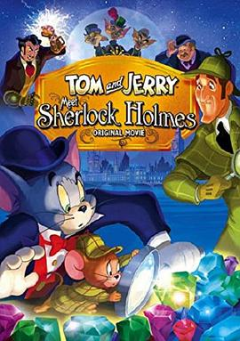

汤姆与杰瑞遇见福尔摩斯 / Tom And Jerry Meet Sherlock Holmes
又名：猫和老鼠与福尔摩斯 / 神探三剑客
还是原版主创比较好看，这个太水了
作品信息
| 导演 | 史派克·布兰特 / Jeff Siergey |
| 编剧 | Earl Kress |
| 主演 | 马尔科姆·麦克道威尔 / 麦克尔·约克 / 约翰·瑞斯-戴维斯 / Grey Delisle / 杰夫·伯格曼 / 菲尔·拉马 / Greg Ellis / 杰斯·哈梅尔 / 理查德·麦克格纳格尔 / 凯斯·索西 |
| 类型 | 动画 |
| 制片国家/地区 | 美国 |
| 语言 | 英语 |
| 上映日期 | 2010-08-16 |
| 片长 | 50分钟 |
| IMDb | tt1722638 |
最后一次看到是 2026-08-12T21:12:19+08:00 · 豆瓣原页